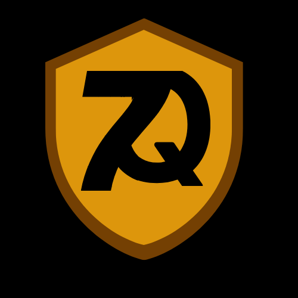

My name is Aabiskar Timilsina. I am 14 years old. I live with my family in Gangabu, Kathmandu, Nepal. I am in Grade 7. I study in Sweta Sadan English Boarding Secondary School. There are four members in my family. They are my father, my mother, my younger brother and me. My father’s name is Narahari Timilsina. My mother’s name is Gayatri Timilsina. My brother’s name is Aagaman Timilsina. I love all the members of my family and they love me too. We live happily toghether. I have some hobbies too. My hobby is to Learn new things. When I see something or know something thing about it then I try to know about it. I am really a curious boy. I love to eat MO:MO, it is even my favourite food. I like to play football, football is my favourite sport. I love oranges, oranges are really so good. I also like watching videos, web-series, movies etc. I really like listening to musics, musics make my mood fresh. I aslo like playing video games but I give first priority to my study. I don’t want me to downgarde my level in study so, I study hard and try my best in all exams. There are many Friends of mine but among them there is my best friend whose name is Krishna Chand. My favourite subject is Maths. I am also good in maths. Only This much for now but life is long and there are many things to happen. Who knows what is waiting for us in future. This was about me.
I made this Website as a beginner HTML programmer. This website is just a demo website for practical of making a website. As practical knowledge is important than theoritical knowledge I thought I should try it practically
My Youtube channel name is 7Q Tech. Please be supportive towards me by hitting that subscibe button so go and get my channel get a new subsciber by your hand. Subscribe.
